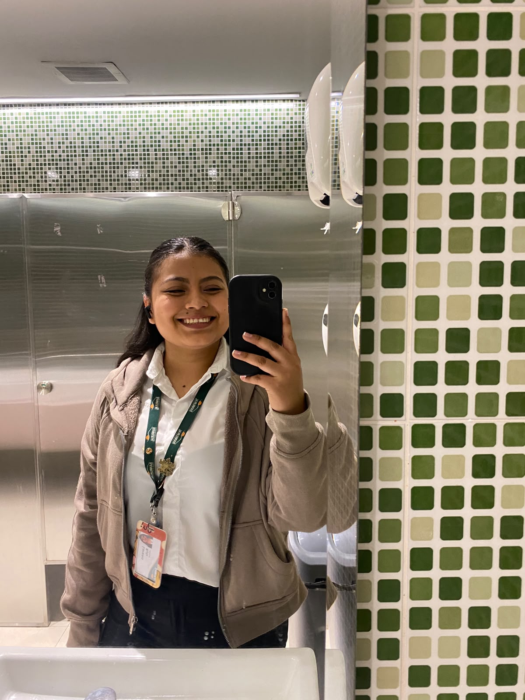
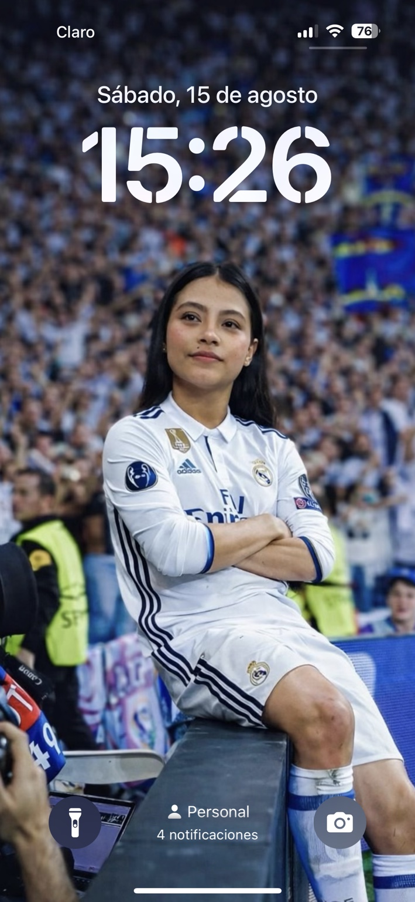
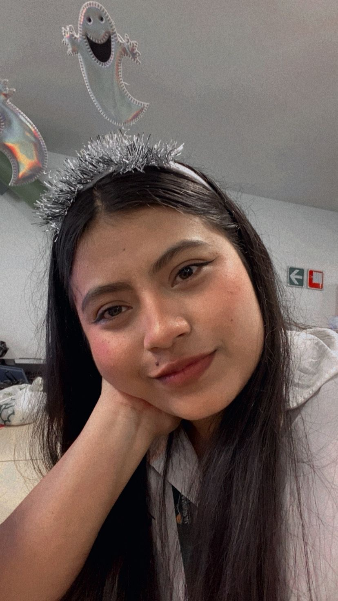
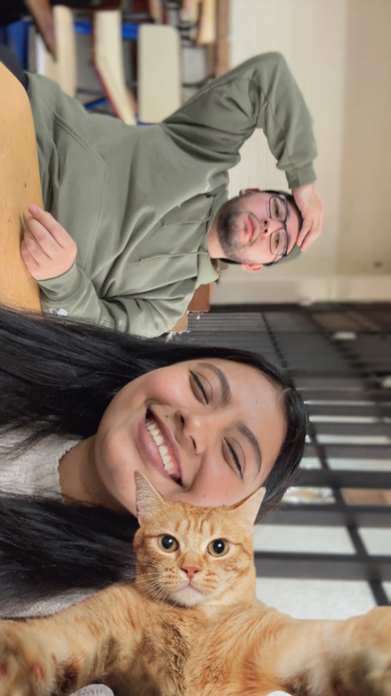

Para Lorena
Hay algo que quisiera decirte...
Y esta vez quise hacerlo de una manera un poquito diferente.
Antes que nada...
Sabes que no soy de muchas palabras.
Por eso te hice esto, Lorena. No es perfecto, lo sé. Quizá tiene sus detalles y no se compara con todo lo que quisiera poder decirte mirándote a los ojos.
Pero detrás de cada palabra y de cada detalle hay algo sincero: me tomé el tiempo de hacerlo porque eres alguien que ha significado mucho para mí.
Tal vez no me salga decir todo esto en persona, pero al menos quería intentarlo de una forma que se sintiera mía. ❤️
Algo que nunca te dije
Me alejé, pero no porque dejaras de importarme.
Nunca llegué a hablar contigo de lo que pasó. Hubo cosas que vi y situaciones que me hicieron pensar muchas cosas, y poco a poco empecé a sentir miedo de salir lastimado.
No sabía si estaba entendiendo bien lo que sucedía, no tenía todas las respuestas y tampoco me atreví a preguntarte directamente. Dejé que mis dudas y mis pensamientos hablaran por mí.
Por eso me alejé. Tal vez pensé que guardar distancia sería más fácil que enfrentar una conversación para la que no me sentía preparado.
Pero ahora entiendo que, aunque tuviera miedo, quizá debí hablar contigo en lugar de desaparecer. No fue la mejor manera de manejar las cosas, y reconozco mi parte en eso.
No te escribo para acusarte, reclamarte ni asumir cosas que nunca llegué a confirmar. Solo quería ser honesto contigo sobre lo que sentí y sobre por qué terminé alejándome.
Pequeños recuerdos
Hay momentos que todavía me sacan una sonrisa.
A veces una foto guarda más de lo que uno sabe explicar. Estos recuerdos son una pequeña parte de lo bonito que compartimos.




No hace falta que el pasado sea perfecto para agradecer las cosas bonitas que nos dejó.
Desde el corazón
No espero que todo vuelva a ser como antes.
No espero que todo vuelva a ser como un día fue. Sé que quizá ya nada será igual, y tampoco quiero pedirte que olvides lo que pasó o que hagamos como si estos días nunca hubieran existido.
Lo que sí quiero es que estés bien. Que seas feliz, que tengas tranquilidad y que la vida te regale muchas razones para sonreír, incluso en los días en los que yo no esté cerca para verlo.
Y si alguna vez me recuerdas, espero que no sea solamente por cómo terminaron las cosas, sino también por esos momentos en los que conseguimos hacernos bien.
Te extraño, Lorena. No me da vergüenza reconocerlo. Pero extrañarte tampoco me da derecho a pedirte nada. Solo quería que lo supieras.
Y esta vez quiero preguntarte
Espero y algun día se de todo de nuevo
Sin presiones, sin promesas imposibles y sin tener que resolverlo todo hoy. Solo una conversación sincera, si tú también quieres.
El botón inquieto hace de las suyas 😂
Gracias por leerme
Me gustaría escucharte, Lore.
No quiero apresurar nada ni asumir que una conversación significa que todo está resuelto. Quiero que podamos hablar con honestidad, escucharnos y entender cómo nos sentimos los dos.
Si hay algo que debamos aclarar, prefiero hacerlo hablando contigo y no imaginando respuestas por mi cuenta.
Me alegra que podamos abrir esa puerta. Vamos con calma, ¿sí? ❤️
Con cariño, para ti, Lorena.
También quería decirte esto
Gracias por escucharme, Lorena.
No hice esto para hacerte sentir culpable ni para obligarte a regresar. Lo hice porque quería expresarte algo que llevaba guardado.
De corazón, espero que estés bien y que seas feliz. Gracias por los momentos bonitos que compartimos. ❤️
Cuídate mucho, Lore.